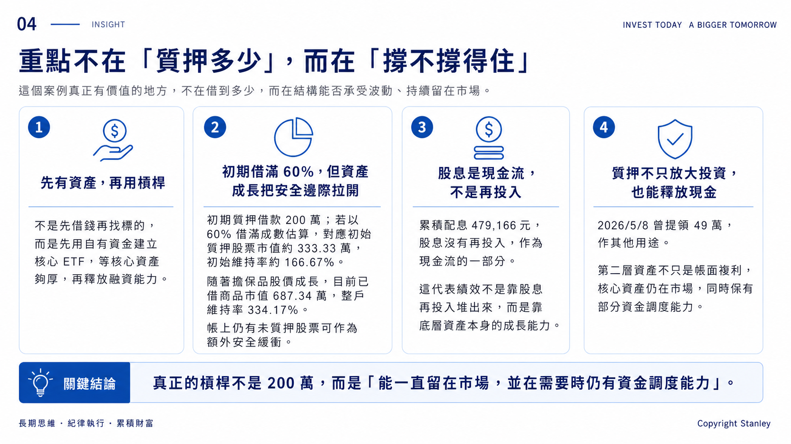
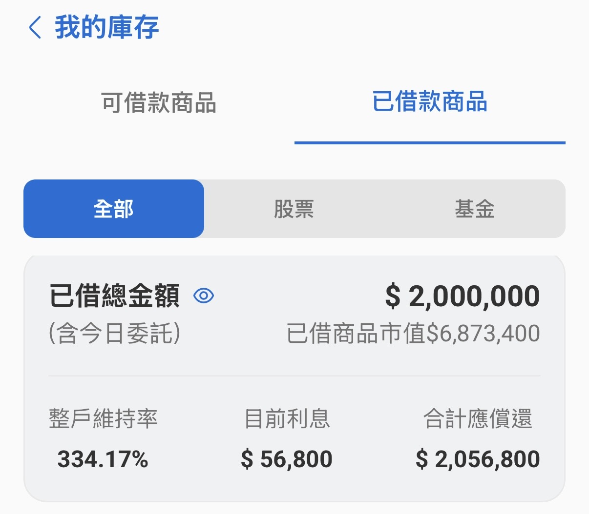
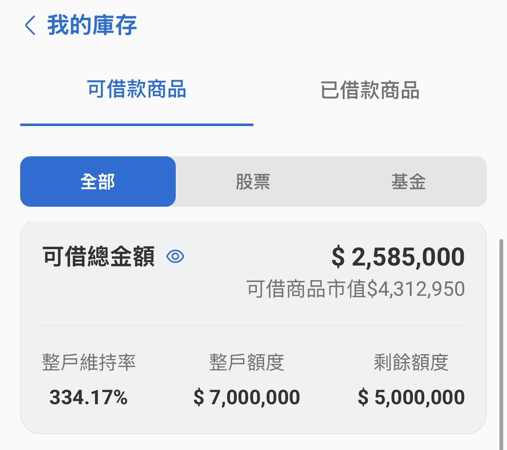

03 · MARGIN
撐得住，才賺得到
質押不是重點，維持率才是
真正重要的不是券商願意借你多少，而是市場下跌之後，你還剩多少選擇。
質押真正重要的，不是借到多少，而是市場跌下來時，你還剩多少選擇。

圖解版重點：先把「初期 60% 借滿」與「現在 334.17% 維持率」分開，避免把不同階段混為一談。
初期｜60% 借滿，維持率約 166.7%
初期質押借款 200 萬。如果以 60% 的借款成數估算，當時對應的質押股票市值約 333.33 萬，初始維持率約 166.7%。
初始結構
200 萬 ÷ 60% ≈ 333.33 萬
333.33 萬 ÷ 200 萬 ≈ 166.7%
現在｜維持率已拉高到 334.17%
隨著擔保品價格成長，目前已借商品市值為 6,873,400 元，整戶維持率為 334.17%，合計應償還金額為 2,056,800 元。
已借總金額
200 萬
已借商品市值
687.34 萬
整戶維持率
334.17%
合計應償還
205.68 萬

原始資料截圖：券商介面顯示的已借總金額、已借商品市值、整戶維持率、目前利息與合計應償還。
真正的第二道安全線：未質押股票
目前核心帳戶中仍保留一部分未質押、且可再作為借款／擔保來源的股票。這些資產平時沒有被放進目前 200 萬的質押結構裡；若市場大幅修正、整戶維持率快速下降，仍保有追加擔保與調整部位的空間。

實際券商截圖：目前畫面顯示「可借商品市值 4,312,950 元」、可借總金額 2,585,000 元，並仍有剩餘額度。這些尚未投入目前質押結構的可動用資產，是我所說的第二道安全線。
為什麼這張截圖重要？
因為「還有未質押股票」不只是口頭假設。實際帳戶仍保留可借款商品與可動用額度，代表市場若出現急跌時，不只有賣出或被動等待兩種選擇，還保留追加擔保、提高維持率與重新調整資金結構的能力。
但要注意
未質押股票不是無限安全。若市場全面重挫，追加擔保的股票本身也可能同步下跌，所以它是第二道安全線，不是「永遠不會被追繳」的保證。
安全邊際不是一開始就有 334%，而是靠資產成長，加上未質押資產的預備，逐步把槓桿風險拉開。